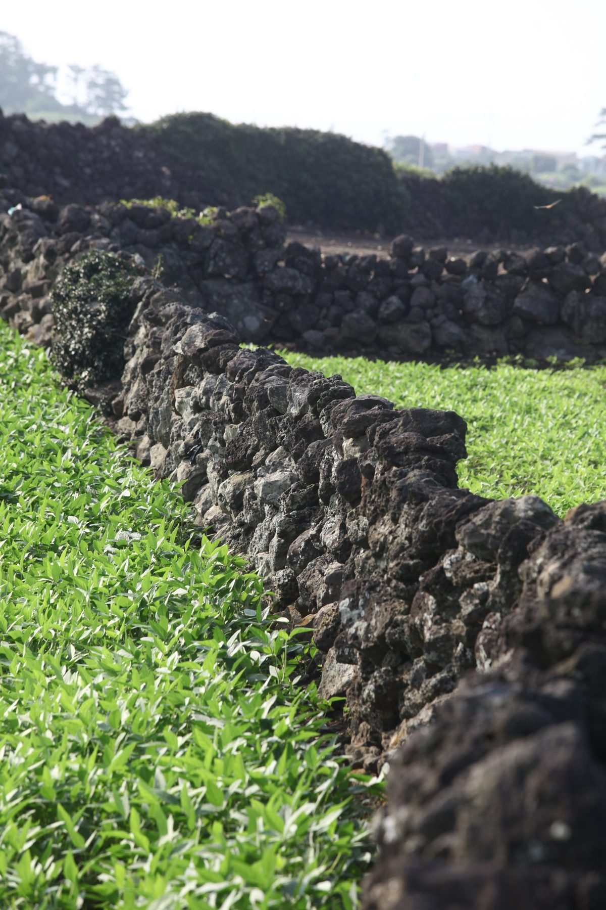

제주도, 주민참여 탄소중립 선도마을 2곳 11월 중순 공개모집…2026~2030년 112억 원 투입

행정동·리 단위로 생활·자원순환·에너지전환 묶어 마을 단위 실증…태양광 설치·마을 다용도시설 RE100 전환 등은 예시, 추진 전후 탄소배출량으로 효과 검증
제주도가 주민이 참여해 마을 단위로 탄소중립을 실증하는 '탄소중립 선도마을' 2곳을 11월 중순 공개모집한다. 대상은 도내 행정동·리 단위 마을이며, 2026년부터 2030년까지 두 마을에 모두 112억 원을 들일 계획이다. 선도마을 사업은 생활과 자원순환, 에너지전환 분야를 한데 묶은 뒤 마을 여건에 맞는 사업을 더하는 방식으로, 태양광 설치와 마을 다용도시설의 RE100 전환, 폐기물·재활용 줄이기 교육 등이 예로 거론되며 구체적인 내용은 공개모집 때 알린다. 도는 앞서 9월 30일부터 10월 13일까지 3개 마을을 대상으로 사전 수요조사를 벌였는데, 공모의 규모와 유형, 추진 방식을 정하려는 것이어서 본 공모 선정평가에는 반영하지 않는다고 밝혔다. 사업 전후 탄소배출량을 견줘 효과를 검증하고 다른 지역으로 넓힐 수 있는지도 살피며, 제주도는 2024년 10월 '탄소중립 선도도시 공모사업'에 광역자치단체로는 유일하게 뽑혀 올해 4월 선도도시 기본계획을 확정한 바 있다. 조선희 도 기후에너지국장은 주민 참여와 마을 여건을 따져 대상지를 고르고 "제주형 탄소중립 이행모델"을 만들어 다른 지역으로 확산하겠다고 말했다.
시민에너지 관점
마을 두 곳에 2030년까지 112억 원을 넣는 공모는 탄소중립을 도 단위 구호에서 마을 생활의 문제로 끌어내린다는 점에서 반길 만하다. 일본 환경성도 2030년까지 가정·상업 부문 전력 소비의 탈탄소를 앞당겨 이룰 '탈탄소 선행지역'을 공모로 뽑아 지원하고 있는데, 이런 사업이 예산을 쓰고 나면 끝나는 시범사업에 그친다는 우려가 늘 따라붙는다. 그 우려에 대한 답은 주민이 설명회 참석자가 아니라 설비의 주인이 되는 데 있으며, 마을이 태양광과 마을시설 설비를 소유하고 전기 판매 수익을 마을 기금으로 돌리는 구조라야 2030년 지원이 끝난 뒤에도 사업이 이어진다. 제주도는 공모 공고에 주민 소유와 수익 배분 기준을 담고, 마을은 지금부터 주민 조직을 꾸려 신청을 준비해야 한다.
출처: 제주의소리 2026-10-28 한형진 원문 보기
済州道、住民参加型の炭素中立先導マウル2カ所を11月中旬に公募…2026～2030年に112億ウォン投入
行政洞・里単位で生活・資源循環・エネルギー転換を束ねて集落単位で実証…太陽光設置・集落の多目的施設のRE100転換などは例示、事業前後の炭素排出量で効果を検証
済州道は、住民が参加して集落単位で炭素中立を実証する「炭素中立先導マウル」2カ所を11月中旬に公募する。対象は道内の行政洞・里単位の集落で、2026年から2030年までに2つの集落に計112億ウォンを投じる計画だ。先導マウル事業は、生活と資源循環、エネルギー転換の分野をひとまとめにしたうえで集落の条件に合った事業を加える方式で、太陽光の設置や集落の多目的施設のRE100転換、廃棄物・リサイクル削減の教育などが例として挙がっており、具体的な内容は公募時に知らせる。道はこれに先立ち9月30日から10月13日まで3つの集落を対象に事前需要調査を行ったが、公募の規模や類型、推進方式を決めるためのもので、本公募の選定評価には反映しないとしている。事業前後の炭素排出量を比べて効果を検証し、他の地域に広げられるかも確かめる。済州道は2024年10月に「炭素中立先導都市公募事業」に広域自治体として唯一選ばれ、今年4月に先導都市基本計画を確定している。チョ・ソンヒ道気候エネルギー局長は、住民参加と集落の条件を考慮して対象地を選び、「済州型炭素中立履行モデル」をつくって他の地域に広げていくと述べた。
市民エネルギーの視点
2つの集落に2030年までに112億ウォンを投じる公募は、炭素中立を道レベルの掛け声から集落の暮らしの問題へと引き下ろすという点で歓迎できる。日本の環境省も、2030年までに家庭・業務部門の電力消費の脱炭素を前倒しで実現する「脱炭素先行地域」を公募で選んで支援しているが、こうした事業には予算を使えば終わる試行事業にとどまるという懸念が常につきまとう。その懸念への答えは、住民が説明会の参加者ではなく設備の持ち主になることにあり、集落が太陽光や集落施設の設備を所有し、電力販売収益を集落の基金に回す仕組みであってこそ、2030年に支援が終わった後も事業が続く。済州道は公募の公告に住民所有と収益配分の基準を盛り込み、集落は今から住民組織をつくって申請に備えるべきだ。
出典: 済州の声 2026-10-28 ハン・ヒョンジン 原文を読む
济州道11月中旬公开招募2个居民参与型碳中和先导村…2026至2030年投入112亿韩元
以行政洞、里为单位，把生活、资源循环和能源转型打包进行村级实证…安装光伏、村多功能设施RE100转型等仅为示例，以实施前后碳排放量检验成效
济州道将于11月中旬公开招募2个"碳中和先导村"，由居民参与、以村为单位实证碳中和。对象为道内行政洞、里一级的村落，计划在2026年至2030年间向两个村共投入112亿韩元。先导村项目先把生活、资源循环和能源转型领域打包，再加上符合各村条件的项目，目前被提及的例子包括安装光伏、村多功能设施的RE100转型以及减少废弃物和回收教育等，具体内容将在公开招募时公布。济州道此前于9月30日至10月13日对3个村进行了事前需求调查，目的是确定招募的规模、类型和推进方式，因此不会反映在正式招募的评选中。项目将对比实施前后的碳排放量来检验成效，并考察能否推广到其他地区。济州道曾于2024年10月作为唯一的广域地方政府入选"碳中和先导城市公募项目"，并于今年4月确定了先导城市基本规划。济州道气候能源局长Jo Seon-hui表示，将综合考虑居民参与和村落条件选定对象地，打造"济州型碳中和实施模式"并向其他地区推广。
市民能源视角
到2030年向两个村投入112亿韩元，这项招募把碳中和从道一级的口号拉回到村落生活之中，值得欢迎。日本环境省也在通过公开招募选定并支持"脱碳先行地区"，要在2030年前率先实现家庭和商业部门电力消费的脱碳，但这类项目总伴随着花完预算就结束、只停留在试点的担忧。回应这种担忧的答案，在于让居民不只是说明会的听众，而是设备的主人：只有村集体拥有光伏和村设施的设备，并把售电收益转入村基金，项目才能在2030年支持结束后继续下去。济州道应在招募公告中写入居民所有和收益分配的标准，各村也应从现在起组建居民组织，准备申请。
来源: 济州之声 2026-10-28 Han Hyeong-jin 查看原文
Jeju to open a call in mid-November for two resident-led carbon-neutral pilot villages, with 11.2 billion won for 2026-2030
Neighbourhoods and villages would bundle daily life, resource recycling and energy transition into village-scale trials; solar panels and switching village halls to RE100 are only examples, and results will be checked against emissions before and after
Jeju Province will open a public call in mid-November for two "carbon-neutral pilot villages," where residents take part in demonstrating carbon neutrality at the scale of a single village. Administrative neighbourhoods (dong) and villages (ri) in the province are eligible, and the province plans to spend a total of 11.2 billion won on the two villages from 2026 to 2030. The project bundles daily life, resource recycling and energy transition and then adds work suited to each village; installing solar panels, converting multipurpose village facilities to RE100 and education on cutting waste and recycling have been mentioned as examples, with details to be announced with the call. The province earlier ran a preliminary demand survey of three villages from September 30 to October 13 to settle the scale, types and method of the call, and said the survey will not count in the selection itself. Emissions before and after the project will be compared to verify its effect and to see whether it can spread to other areas; Jeju was the only metropolitan-level government chosen in the "carbon-neutral pilot city" competition in October 2024 and finalised its pilot city master plan in April this year. Jo Seon-hui, director of the province's climate and energy bureau, said the sites will be chosen with resident participation and local conditions in mind, and that the province will build a "Jeju-style carbon neutrality implementation model" and spread it to other regions.
Citizen Energy View
Putting 11.2 billion won into two villages through 2030 brings carbon neutrality down from a provincial slogan to an issue of everyday village life, and that is welcome. Japan's Ministry of the Environment likewise selects and supports "decarbonization leading areas" through open calls, aiming to decarbonize household and commercial electricity use ahead of the rest of the country by 2030, but such programmes always face the worry that they will end as pilots once the budget is spent. The answer to that worry is for residents to be the owners of the equipment rather than an audience at briefings, because only if villages own the solar panels and the equipment in village facilities, and channel electricity sales into a village fund, will the work continue after support ends in 2030. Jeju should write resident ownership and profit-sharing criteria into the call, and villages should start organising residents now to prepare their applications.
Source: Jeju Sori 2026-10-28 Han Hyeong-jin Read the original